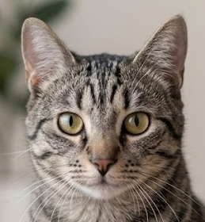
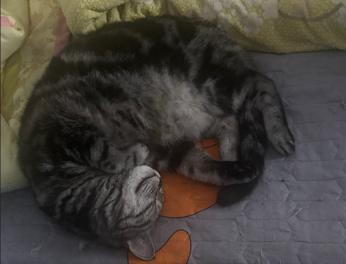
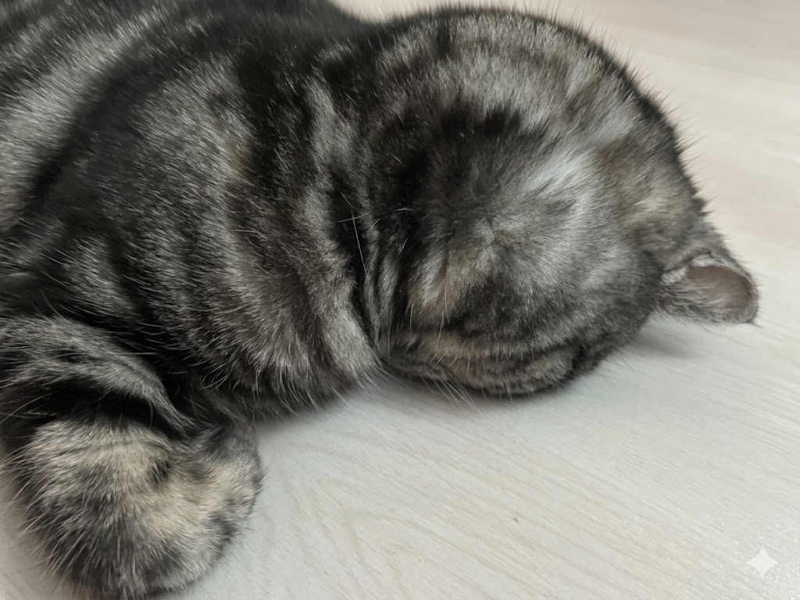
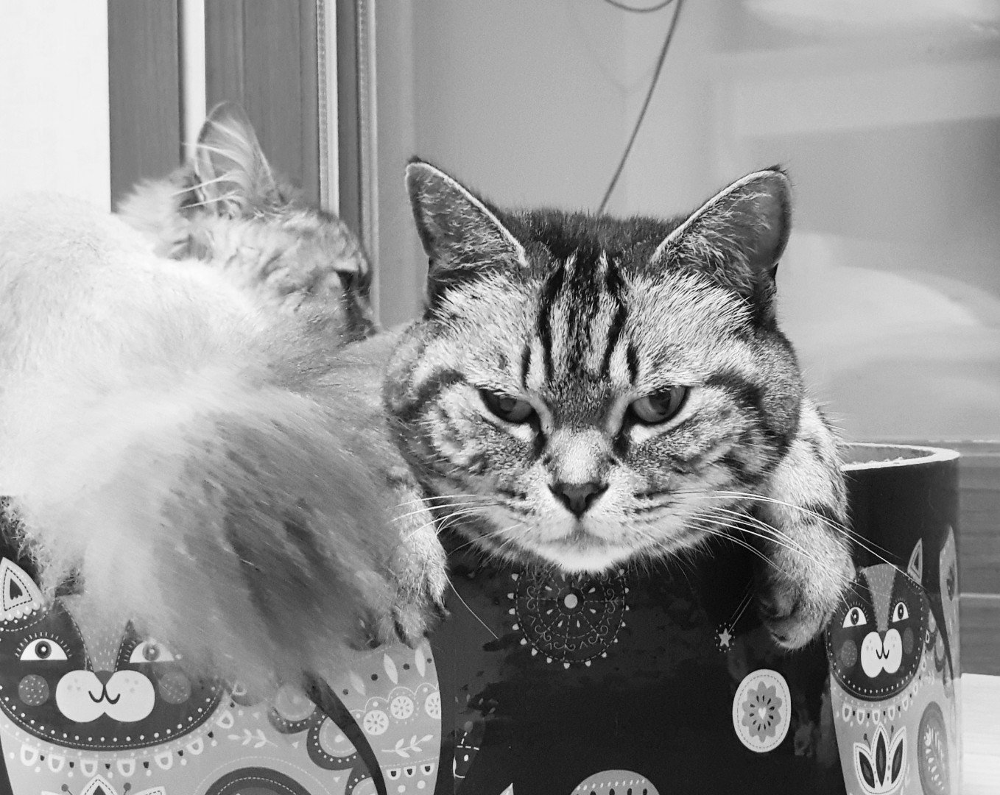

🐱 Sujeong

소개
이름 : 김수정
생년월일 : 2012년 5월 4일
성별 : 여아 ♀️
성격
기본적으로 온순하지만 은근히 까칠한 성격
집사는 아무것도 안 했는데 기분이 안 좋으면 하악질함
간식을 사랑하는 진정한 먹보 고양이
좋아하는 것
간식 간식 간식 간식 간식
축구공처럼 몸을 말고 자기
얼굴을 바닥에 박고 자기
비닐봉지 가지고 놀기
Gallery



← 홈으로 돌아가기